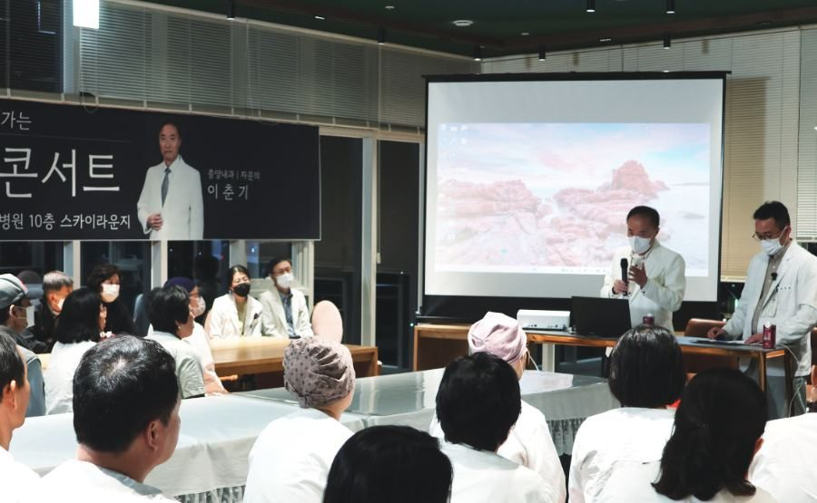
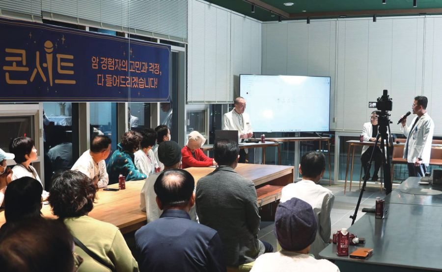
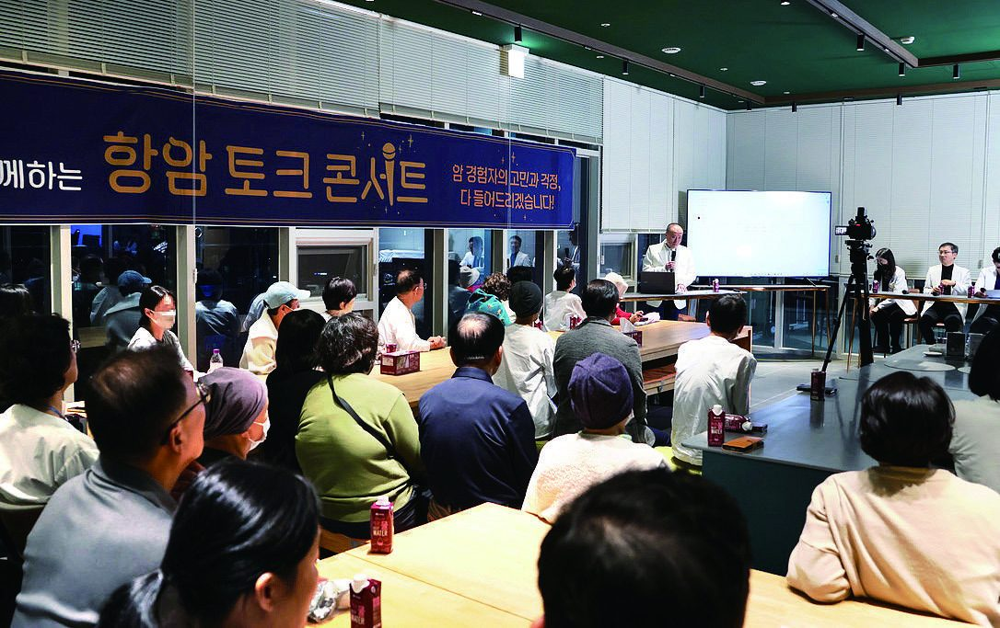
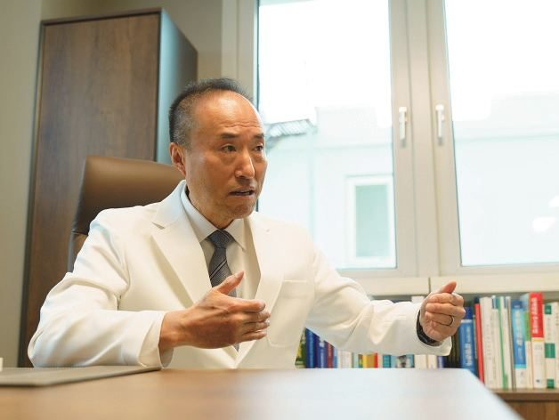

첫 화면 › 암정보 도서관
진료실을 나서면 다시 궁금해지는 질문, 어디서 찾아보나요?
치료가 궁금할 때 찾아보시라고 한곳에 모았습니다. 항암 부작용은 언제 병원에 연락해야 하는지, 수술 후 언제부터 걸어도 되는지 ― 진료실을 나서면 다시 궁금해집니다. 하일렌요양병원은 그 질문에 답하는 영상과 글을 ‘암정보 도서관’에 모았습니다. 여기에서 바로 보실 수 있습니다. 수술과 항암 같은 암 치료는 지금 다니시는 대학병원·암병원에서 그대로 이어 가시고, 하일렌요양병원은 그 사이의 회복을 함께 돌봐 드립니다.

- 무엇이 있나
- 질문별 문서와 관련 글 · 강의·토크 콘서트·특강 영상 · 최신 암정보
- 출처
- 하일렌 공식 블로그(hello_heilen) · 하일렌 유튜브(@hello_heilen)
- 문의
- 원내 상담실 · 카카오톡 채널 · 062-439-1000
질문별로 찾아보기
환자분과 보호자분이 실제로 물으시는 질문을 기준으로 모았습니다. 여기서 답해 드리는 질문은 아래 질문별 문서에 두었고, 다른 쪽에서 답해 드리는 질문은 그쪽으로 이어 드립니다. 글 제목은 블로그에 올린 제목 그대로입니다.
다른 페이지가 답하는 질문
수술 후·항암 중 회복이 궁금할 때
위암 수술 후 미음은 언제까지 먹나요
미음에서 죽, 진밥, 밥으로 올리는 때는 드신 뒤의 반응을 보고 주치의가 정하고, 입원 중에는 영양컨시어지가 드신 양을 주기적으로 확인합니다. 자세한 안내는 위암 수술 후 회복 안내에서 확인하실 수 있습니다.
관련 글
대장암 추적검사는 얼마나 자주 하나요
입원 중에 검사 날이 겹치면 그날 다녀오시면 되고, 진료의뢰서는 원내 주치의가 써 드립니다. 추적검사의 간격과 항목은 대학병원·암병원·종합병원 담당의가 정해 준 일정을 따릅니다. 자세한 안내는 대장암·직장암 수술 후 회복 안내에서 확인하실 수 있습니다.
관련 글
항암 후 손발 저림은 언제까지 가나요
저림이 오래가면 일상이 많이 불편하실 겁니다. 저림이 심해지거나 걸을 때 균형이 불안하시면 참지 마시고 말씀해 주세요. 입원 중 밤에 저림이 심해지면 병동 간호사에게 바로 말씀하시면 되고, 밤이나 새벽, 주말에도 당직 의료진이 확인하고 처방합니다. 저림이 언제까지 갈지는 사람마다 달라 미리 말씀드리기 어렵고, 대학병원·암병원의 지침을 따릅니다. 대학병원·암병원 진료가 필요하다고 보이면 안내해 드립니다.
관련 글
암 수술 후 걷기는 얼마나 해야 하나요
어디까지 움직여도 되는지는 주치의가 몸 상태를 살피고 환자분과 이야기를 나눈 뒤 함께 정합니다.
관련 글
통증
수술 직후에는 통증·상처·합병증을 세심하게 관리합니다.
면역 및 통증 치료센터의 통증·자율신경 주사치료와 암재활 림프 순환센터의 통증치료는 치료센터 안내에 있습니다.
관련 글
영양·식사
입원 중 식사는 주치의가 환자분 상태에 맞춰 처방하고, 치료식(일반식 · 항암식 · 위절제식 · 저잔사식 · 저염식 · 저요오드식 등) 가운데에서 고릅니다. 영양컨시어지가 드신 양과 드신 뒤 불편한 점을 주기적으로 확인해 기록하고, 주치의가 그 기록을 보고 식사를 처방합니다.
관련 글
피로·체력
표준 치료를 마친 뒤에는 떨어진 체력과 신체 기능의 회복을 돕습니다.
항암·방사선 치료 중에는 발열·오심·피로 같은 부작용 증상을 살피고 관리합니다.
관련 글
마음과 보호자가 궁금할 때
조직검사 결과를 기다리는 동안 너무 불안해요
결과를 기다리는 시간은 누구에게나 길고 불안합니다. 수술 뒤 조직검사 결과를 기다리는 동안에는 집에서 지내며 외래 회복치료를 받으러 다니실 수도 있고, 입원해 지내실 수도 있습니다. 입원하신다면 기간은 먼저 결과를 듣는 외래 날까지로 잡아 두고, 그 뒤는 결과를 듣고 주치의와 상의해 다시 정합니다. 수술 전 검사 결과를 기다리는 시기의 이용은 원내 상담실에서 안내해 드립니다. 입원 중이시라면 병동 간호사나 주치의에게 편하게 말씀해 주세요. 명상 프로그램은 김성훈 수석병원장이 직접 진행합니다. 프로그램 페이지에서 보실 수 있습니다.
관련 글
암환자 보호자인데 너무 힘들어요
곁을 지키시는 보호자분도 많이 지치십니다. 보호자께서 종일 곁에 계시지 못해도 의료진이 24시간 상주하고, 밤에도 당직 의료진이 확인해 처방합니다. 보호자께서 함께 지내실지, 오가며 면회하실지는 입원 상담 때 원내 상담실에 말씀해 주시면 병실과 면회 방법을 안내해 드립니다. 보호자분이 힘드신 점도 편하게 말씀해 주세요.
관련 글
검사·입원·감염이 궁금할 때
암 유전자 검사, 가족도 받아야 하나요
유전자 검사와 유전 상담, 결과 해석은 치료받으시는 병원에서 받으시고, 입원 중 그 외래가 잡히면 주치의가 진료의뢰서를 미리 준비해 드립니다. 자세한 안내는 자주 묻는 질문에서 확인하실 수 있습니다.
관련 글
입원은 어떻게 정하고 얼마나 있나요
입원 기간은 모든 분께 같게 정해져 있지 않고, 다음 치료 일정과 몸 상태를 보고 주치의가 진료에서 환자분과 상의해 정합니다. 입원 상담과 일정은 원내 상담실에서 안내해 드립니다. 자세한 안내는 입원 안내와 단기입원·외래 안내에서 확인하실 수 있습니다.
관련 글
항암 중 감기·감염이 걱정돼요
항암 중에는 감기 기운도 가볍게 넘기기 어렵습니다. 호중구가 낮은 시기에는 감염을 막는 생활 관리를 먼저 챙기고, 수치를 어떻게 볼지와 외출·면회 범위는 원내 혈액검사와 진료에서 정합니다. 감기약을 드셔도 되는지는 대학병원·암병원의 지침을 따릅니다. 자세한 안내는 폐암 회복 안내와 혈액암·림프종 회복 안내에서 확인하실 수 있습니다.
관련 글
강의·토크 콘서트·특강 영상
하일렌요양병원에서 열린 강의와 항암 토크 콘서트, 초청 특강 가운데 일부를 연도별로 모았습니다. 영상은 하일렌 유튜브(@hello_heilen)에 있습니다.


| 연도 | 행사 | 연자 | 제목 | 영상 |
|---|---|---|---|---|
| 2023 | 특강 | 장익완 병원장 | 「고주파온열암치료와 고용량비타민C」 | 영상 없음 |
| 2024 | 제1회 항암 토크 콘서트 | 「유방암·갑상선암·췌장암·폐암 Q&A 총정리」 | 영상 보기 | |
| 2025 | 제2회 항암 토크 콘서트 | 「암 재발 방지·항암 부작용·면역항암제까지 Q&A 총정리」 | 영상 보기 | |
| 2025 | 초청 특강(원내) | 정민규 교수(연세암병원 종양내과) | 「암의 특징, 항암 치료별 기전 및 특징」 | 영상 보기 |
| 2025 | 유튜브 강의 | 김성훈 수석병원장 | 「갑상선암 증상부터 치료, 관리까지!」 | 영상 보기 |
| 2026년 10월 23일(예정) | 초청 특강(10층 스카이라운지) | 이창영 교수(세브란스병원 흉부외과 과장) · 강상욱 교수(연세암병원 부원장) | 1부 「폐암 수술의 최신 경향」 · 2부 「갑상선암의 진단과 치료」 | 소식에서 보기 |
이춘기 자문의 강의·영상
| 연도 | 행사 | 연자 | 제목 | 영상 |
|---|---|---|---|---|
| 2023 | 개원 기념 특강 | 이춘기 자문의 | 「암! 어떻게 관리해야 하나요?」 | 영상 보기 1부 · 2부 |
| 2025 | 유튜브 강의 유방암 교실 1부 | 이춘기 자문의 | 「유방암 발생 원인, 예방, 진단까지」 | 영상 보기 |
| 2025 | 유튜브 강의 유방암 교실 2부 | 이춘기 자문의 | 「재발, 전이 두렵지 않아! 최신 치료법」 | 영상 보기 |
| 2025 | 유튜브 강의 유방암 교실 3부 | 이춘기 자문의 | 「치료제 부작용 관리, 대처하는 법」 | 영상 보기 |
| 2025년 11월 10일 | 제3회 항암 토크 콘서트(10층 스카이라운지) | 이춘기 자문의 | 「15가지 질문 완전 정복, 갑상선·대장·췌장·유방·신장·위암까지」 | 영상 없음 |
자문의 칼럼
하일렌 공식 블로그에서는 이춘기 자문의의 칼럼을 연재하고 있습니다. 최신 항암제 이야기부터 항암 부작용 관리, 재발·전이를 판단하는 기준까지 환자분들이 궁금하지만 쉽게 물어보기 어려운 주제를 정리하고 있습니다.

최신 암정보
홈페이지 게시판에 올린 암정보 글을 모았습니다.
- [최신 암정보] 키트루다, 방사선 없이 3기 폐암 도전 2025-10-23
궁금한 점은 원내 상담실(062-439-1000)이나 카카오톡 채널로 편하게 물어봐 주세요.
제공 하일렌요양병원 · 갱신 2026-10-21